Kirstine Aggergaard
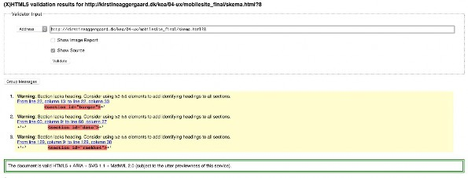
Billede: Validering af HTML
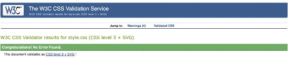
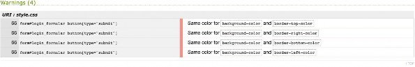
Billede: Validering af CSS
Følgende er screenshots af lighthouse-testen:
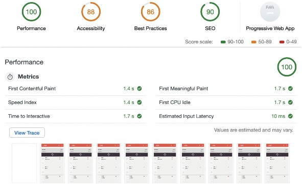
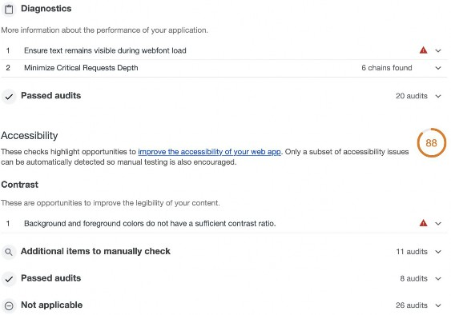
Best Practices
Does not use HTTPS
2 Does not use HTTP/ 2 for all of its resources
12 insecure requests found A v
12 requests not served via HTTP/2 A v
Passed audits 13 audits v
SEO
These checks ensure that your page is optimized for search engine results ranking. There are addit ional factors Lighthouse does not check that may affect your search ranking. Learn more.
Content Best Practices
Format your HTML in a way that enables crawlers to better understand your app's content.
Document does not have a meta descripti on
o_ Additional items to manually check Passed audits
0 Not applicable
Progressive Web App
These checks validate the aspects of a Progressive Web App. Learn more.
A V
1 audits v
9 audits v
2 audits v
PN
Fast and reliable
Page load is fast enough on mobile networks $ V
Current page does not respond with a 200 when offline A V
start_url does not respond with a 200 when offline A V
No usable web app manifest found on page.
lnstallable
Does not use HTTPS
Does not register a service worker that controls page and start_url
Web app manifest does not meet the installability requirements Failures: No manifest was fetched.
12 insecure requests found A v
A V
A V
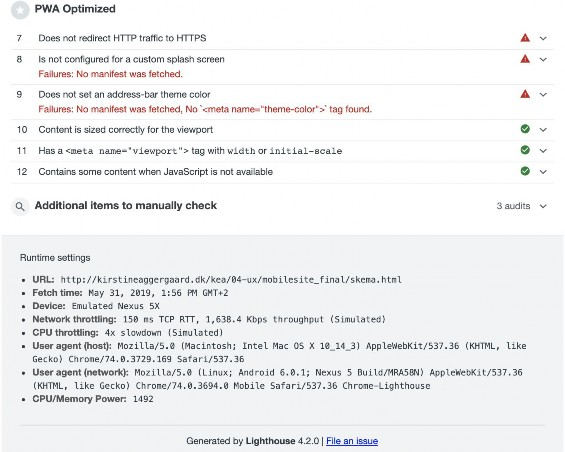
https://github.com/Kirstineaggaregaard/04_02_01_web_prototype_kirstine.git
Link til trello board: https://trello.com/b/HooA9M6J/web-prototype
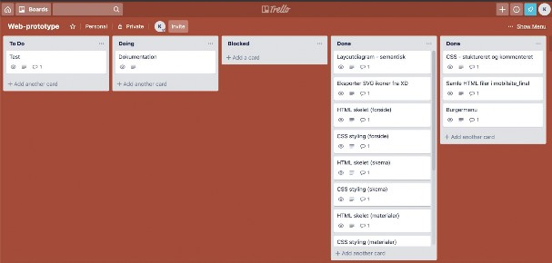
Billede: Status på trello board fredag d. 31. Maj kl 12:00
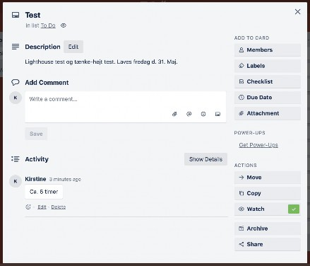
Billede: Eksempel på task i trello, med beskrivelse og tidsestimering.
Jeg startede meget forvirret ud de første to dage i forløbet. Her manglede jeg overblik og struktur, dette resulterede i at jeg mandag d. 27. Maj måtte starte fra scratch.
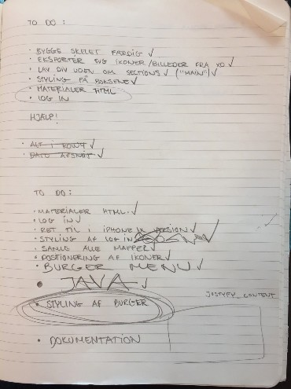
Billede: Todo liste, skrevet i hånden
Mandag
Først lavede jeg et delvist semantisk layout diagram over forsiden. Herefter samlede jeg alle ikoner fra XD-prototypen, eksporterede dem som svg filer og placerede dem i en mappe i mit projekt.
Derefter udarbejdede jeg HTML skelettet til forsiden ud fra layout diagrammet og stylede det i css.
Tirsdag
Her tog jeg udgangspunkt i samme procedure som mandag, bare med undersiderne ‘skema’ og ‘materialer’. Da de var færdige, positionerede jeg alle ikoner også de klikbare.
Onsdag
Samme procedure som mandag og tirsdag, denne gang med log in siden.
Da den var klar lavede jeg burger-menuen, dog uden styling. Jeg samlede derefter alle html filer i en mappe og sammensatte samt ukommenterede en endelig css fil.
Torsdag
Her stylede jeg burgermenuen og begyndte at samle alt dokumentation i et dokument.
Fredag
Små rettelser i html, css og javaScript. Forberedelse af test og udførelse af test. Færdiggørelse af dokumentation.
I følgende afsnit vil jeg for så vidt muligt forklare hvordan jeg har lavet min burger-menu. Jeg vælger at forklare denne kode, da den har voldt mig problemer og derudover er den eneste kode del i projektet med javaScript.
Jeg starter med html:
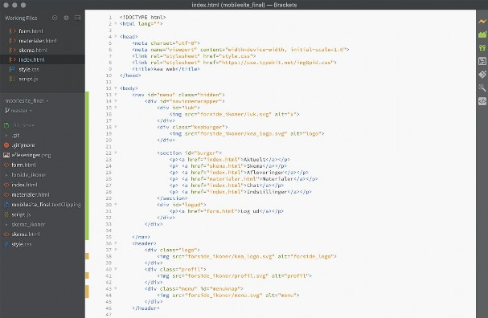
Jeg opretter et nav tag inde i body med id selectoren #menu, nav tag’et bruger jeg da jeg skal kunne navigere i menuen.
Inde i nav tag’et har jeg lavet en div med id selectoren #navinnerwrapper som nester en div med id selectoren #luk, en div med class selectoren .keaburger, en section med id selectoren #burger og endnu en div med med id selectoren #logud.
Div’en .keaburger indeholder et img tag med kea’s logo.
Sectionen #burger indeholder mine a tag’s som linker til html siderne. Div’en #logo indeholder et a tag som linker til form.html.
Kort forklaring af selectorere:
Id selectorer - id er unik, ligesom et cpr nummer. Det er derfor også det vigtigste, og den vinder når man bruger den inde i sit stylesheet.
Class selectorer - ‘.’ Definere en class. Class er fælles, altså alle kan være under samme kategori
Id’er og class’ er derfor vigtige fordi disse skal overføres i CSS’en når der skal styles på menuen. Her refererer jeg nemlig til lige præcis det id eller den class som fx skal have en bestemt position, farve eller font.
Udover #menu, giver jeg også min div med class’en .menu et id #menuknap inde i min header. Dette bliver koblet sammen i JavaScript, så brugeren kan bruge knappen i headeren til at vise burger-menuen (nav #menu) ved et klik.
Videre til CSS:
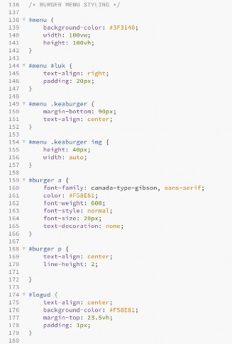
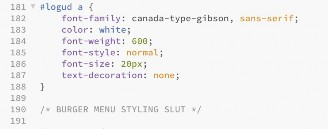
I CSS styler jeg de forskellige div’er og sections. Når man refererer til et id foranstiller man et hashtag ‘#’ og til class’ foranstiller man et punktum ‘.’
Jeg brugte text-align for at centrere alle tag’s i menuen, derudover gav jeg #menu både width og height på hhv. 100vw og 100vh.
Vh = viewport hight, højden på browserens højde Vw = viewport width, bredden på browserens bredde
Jeg tilføjer alt font styling, så teksten får lige det udtryk jeg går efter (XD-prototypen) og tilføjer derudover også farver (både baggrund og farver på font).
For at gøre burgermenuen brugervenlig og klikbar, opretter jeg et script.js med javaScript:
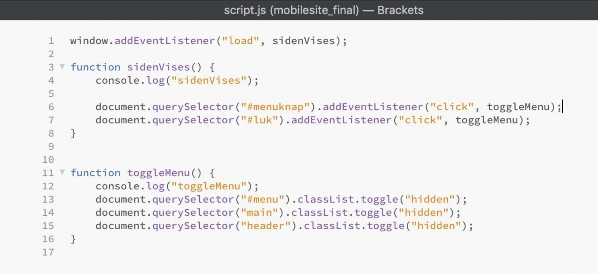
Først opretter jeg en window.addEventListener som peger på load, det vil sige når siden er loaded så springer den ned i funktionen sidenVises.
I functionen sidenVises laver jeg en dokument.querySelector (fortsat d.qS) som peger på id selectoren #menuknap her tilføjes .addEventListener “click”, som gør det muligt at klikke på ikonet. Til slut henvises der til function toggleMenu, det vil sige at når man har klikket på ikonet hopper den ned i functionen toggleMenu.
I toggleMenu tilføjes en d.qS som peger på id selectoren #menu, denne har en classList.toggle på class’ .hidden. Dette betyder at class .hidden enten bliver fjernet eller tilføjet, alt efter dets udgangspunkt. I dette tilfælde bliver .hidden fjernet fra id’et #menu da jeg i min html havde tilføjet class’ .hidden på #menu = menuen bliver synlig.
Jeg bruger samme fremgangsmåde for div’en #luk, denne gang tilføjes class .hidden i stedet for blive fjernet. Det vil sige at menuen lukker (= bliver usynlig) når man klikker på #luk.
Den endelige burger-menu:
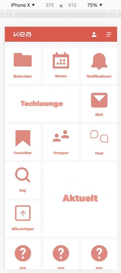 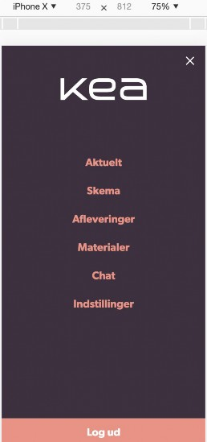
Link til web prototype
http://kirstineaggergaard.dk/kea/04-ux/mobilesite_final/form.html
Introduktion:
Hej velkommen til min test.
Jeg viser dig om lidt min prototype på et nyt intranet til kea. Husk på at jeg ikke tester DIG, men min PROTOTYPE. Ikke alle funktionaliteter er udviklet, og det er derfor ikke alt du kan klikke på
- så hvis noget ikke virker er det IKKE din skyld, men udelukkende tekniske begrænsninger i prototypen.
Jeg vil bede dig sige alt hvad du tænker og gør højt undervejs i testen, selvom dette kan føles meget unaturligt hjælper det mig til at følge med og forstå din oplevelse med prototypen.
Spørgsmål til test-person:
Forestil dig at du er studerende på kea, du har brug for at finde undervisningsmateriale frem fra Mandag d. 20. Maj. Hvordan gør du det?
Testperson Køn: Mand Alder: 50 år
Testperson fandt hurtigt frem til materialerne, bemærkede godt positioneringen af ikoner i skemaet. Fandt koblingen mellem ikonerne på forsiden og ikonerne på undersiderne rigtig god. Log in formularen imponerede, da testpersonen syntes det var fedt at kunne bestemme sin egen e-mail og kodeord.
Testpersonen var ikke ligefrem målgruppen for prototypen, men efter god feedback fik jeg bekræftet at overskueligheden og forståelsen i prototypen var god. Det var dog svært for testpersonen at ramme ikonerne - disse kunne med fordel være større.
Gode ting ved prototypen:
Overskuelig
Behagelige farver Forståelige ikoner
God information (skrift) God navigation
Mindre gode ting: Ikonernes størrelse Ikonernes placering
Størrelsen på ikonerne, de skal være større og have ‘den rigtige’ placering - som i XD-prototypen var yderst til højre i modulerne.